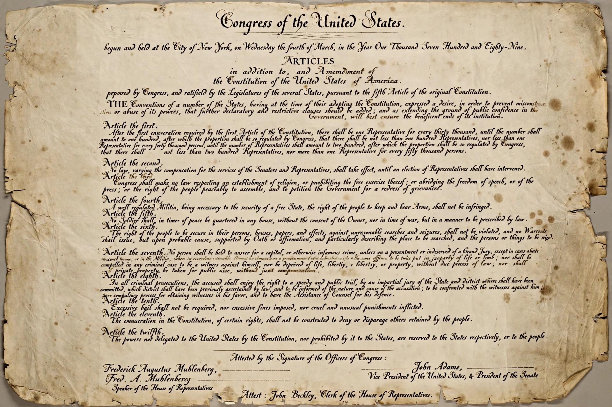

Amendment
From Wikipedia, the free encyclopedia
An amendment is a formal change or addition proposed or made to a law, contract, constitution or other legal document. It is based on the verb to amend, meaning to change for the better. Amendments can add, remove or update parts of the original text; the process by which they may be made is often prescribed by the document itself, and constitutional amendments typically require a special procedure more demanding than that for ordinary legislation.

The Bill of Rights: the first ten amendments to the United States Constitution, ratified in 1791.
In constitutional law, an amendment alters a written constitution once it has been adopted through the prescribed ratification process. The difficulty of amendment varies widely between countries: some constitutions, such as that of the United States, have been amended only rarely, while others are amended frequently. Amendment procedures are commonly divided between entrenched provisions, protected by special majorities or referendums, and unentrenched ones that the legislature may change by ordinary means.
Constitutions
The United States Constitution has been amended 27 times since 1788; the first ten amendments, adopted together in 1791, are known as the Bill of Rights. Article V requires proposal by two-thirds of both houses of Congress (or by a convention called on the application of two-thirds of the state legislatures) and ratification by three-quarters of the states. By contrast, the Constitution of India has been amended more than one hundred times since 1950, and some provisions of it can be changed by a simple parliamentary majority.
Many constitutions place certain principles beyond amendment altogether. Germany's Basic Law contains an “eternity clause” protecting human dignity and the democratic and federal character of the state, and Indian courts developed the basic structure doctrine holding that Parliament may not amend away the constitution's essential features.
Legislation and other documents
In parliamentary procedure, an amendment is a motion to change the wording of another motion under debate; legislatures routinely amend bills during their passage. Contracts and other legal instruments may likewise be amended by agreement of the parties, and international treaties may be amended by further agreement among the states parties. In each case the amendment, once validly made, forms part of the amended text and is interpreted together with it.
See also
Constitution · Bill of rights · Constitutional law · United States Constitution